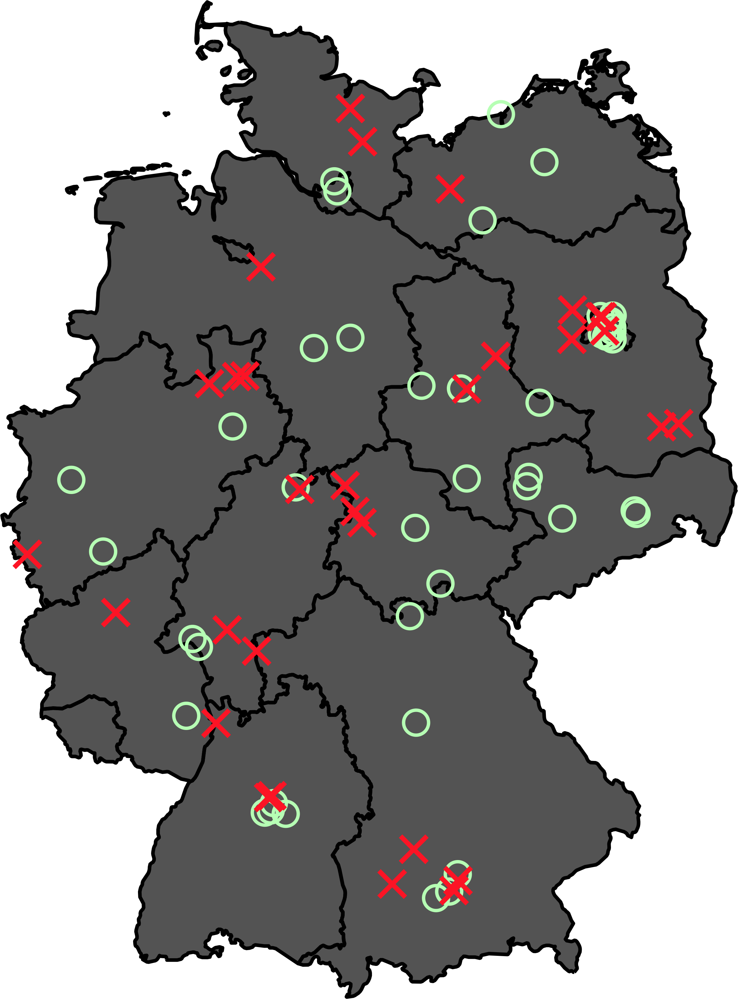

![]()
The following post provides a summary of research and findings detailed in full in the European Journal of Political Research: https://doi.org/10.1017/S1475676525100121.
Across Europe, more states are turning to bans as a way to rein in organised extremism. But there are often many extremist organisations within democratic societies, many antagonistic to constitutional democracy and many acting unlawfully. Which organisations get banned and why? As the archetype of militant democracy, where political rights can be selectively restricted in order to protect liberal democratic order, Germany has used powers to ban extremist organisations relatively frequently. Still, not every extremist group ends up on the receiving end of a ban. A new study dives into this puzzle, using two-step qualitative comparative analysis (QCA) to explain why German governments over the last three decades have decided to ban far-right organisations—and what these decisions reveal about democracy’s limits.
Far-right visibility pressures governments to respond
Germany’s Interior Minister (in the case of organisations) and its Federal Constitutional Court (in the case of political parties) can ban organisations that threaten Germany’s democratic order and constitutionally enshrined values. Figure 1 maps the dozens of far-right organisations monitored by Germany’s federal law enforcement between 1990 and 2023. In that time, German governments banned 31 far-right organisations.

My study found that high far-right visibility is necessary for banning decisions. German governments banned far-right organisations only in years when far-right activity, in the form of violence or agitation, was highly visible. Conspicuous incidents of violence in particular were often a prod to proscriptive action. Organisational unlawfulness alone is not enough to explain banning decisions. Without public or political awareness, authorities appear unlikely to act, even if a group is technically illegal. Two case studies revealed that public outcry, media coverage, and political pressure often play a decisive role.
This suggests that German governments’ responses to extremism are more pragmatic than principled. Banning is not just a matter of legal thresholds—it is also about timing, attention, and external pressure. In other words, bans happen not just because a group is dangerous, but because the danger becomes visible and urgent.
Four patterns of banning far-right organisations
Within high-visibility situations, German governments banned four types of far-right organisations:
- Neo-Nazi movement groups – These organisations openly espoused National Socialist ideology—a legally sufficient basis for banning in Germany and several other countries—and promote racial hatred and violence.
- Longstanding hubs – These organisations exist for longer periods before being banned and serves as centres of far-right activism and networking.
- Militant organisations – These organisations embody particularly aggressive, confrontational far-right activism.
- Neo-Nazi sham parties – These organisations present themselves as political parties but adopt that guise in hopes of gaining more protection against organizational bans and spreading neo-Nazi ideology under a more legitimate cover.
When the far right is highly visible, German governments repeatedly look to these types of organisations to take banning action.
Bans reflect politics as much as law
The findings challenge the idea that banning extremist organisations is simply a legal matter. Many far-right groups that meet the legal criteria are never banned. Some bans follow public incidents in which the targeted group was not directly involved.
This highlights a key point: bans are often political tools. They help governments show responsiveness to public fear or outrage. They can also help neutralise growing extremist movements by disrupting organising and activism. Also, as a government once explained, banning can have a desirable chilling effect: other far-right groups ‘have at least restricted their agitation activities in order to avoid bans.’ But bans can also be symbolic, signaling action without actually changing much on the ground, within the organizational ecologies of far-right activity.
Pragmatic banning: benefits and risks
This sort of pragmatism underlying banning decisions entails benefits and risks. On one hand, it allows democracies to act swiftly when threats escalate. It also shows that public pressure matters—citizens and activists, media, and other parties can influence state decisions. On the other hand, it creates inconsistency. Two similar groups may be treated very differently depending on timing, media attention, or political mood.
That inconsistency raises concerns about fairness and effectiveness. Arbitrary enforcement risks undermining trust in democratic institutions. It can also leave dangerous groups untouched if they manage to stay under the radar.
Still, the study suggests that bans can be effective in disrupting extremist networks. In the cases examined, banning one group plausibly discouraged others or limited their ability to operate. Yet this effect depends on how well the state understands the broader ecosystem of extremist activity—and whether it sees bans as a strategy, not just a legal endpoint or political tool.
Banning beyond Germany
While Germany is a special case because of its history, the large far-right movement scene, and governments’ longstanding banning practices, its example nevertheless holds lessons for other democracies. Many countries have used or adopted militant democracy tools, including laws for banning extremist organisations. Yet across contexts, the same basic challenge remains: laws exist, but enforcement varies.
My research points to a common pattern: bans do not just follow the law—they follow pressure. Public visibility, political will, and social mobilisation all shape outcomes. This means that organisational bans and perhaps other militant democracy decisions are not solely in the hands of governments. Societal actors inform and influence how states and governments respond to extremism.
A version of this blog was originally published by The Loop